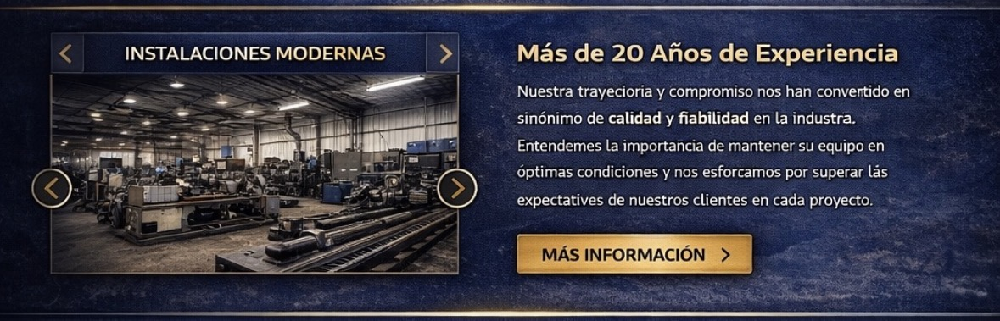

Informe técnico validado
TC / Transmisiones / 024
Ingeniería de transmisión
Geometría del cardán bajo carga real
Criterios de inspección para reconocer desalineación, proteger los apoyos y recuperar una transmisión estable antes de que la vibración se convierta en una falla mayor.
Una transmisión puede verse intacta y, sin embargo, trabajar fuera de geometría. La diferencia entre una corrección precisa y un recambio innecesario está en medir el sistema completo, no solamente sus piezas.
El eje cardánico compensa distancia y movimiento entre componentes que no permanecen alineados. Esa capacidad no elimina las exigencias geométricas: los ángulos de entrada y salida deben relacionarse correctamente, las horquillas deben conservar la fase y el conjunto debe girar sin excentricidad relevante.
Cuando esas condiciones cambian, la velocidad angular deja de transmitirse de forma uniforme. El resultado puede sentirse como una vibración cíclica, pero también puede aparecer como desgaste acelerado en crucetas, rulemanes, retenes o soportes. Una evaluación profesional busca el origen de esa cadena, no solo el síntoma más evidente.
Leer el conjunto como sistema
El diagnóstico comienza con el vehículo o la máquina en su condición habitual de trabajo. Altura, carga, suspensión y posición de los apoyos modifican los ángulos efectivos; medir con el conjunto descargado puede describir un escenario que nunca existe durante la operación.
Indicadores que deben registrarse
- Rango de velocidad o RPM en el que aparece la vibración.
- Variación del síntoma al acelerar, retener o sostener carga.
- Estado de crucetas, estriados, soporte central y fijaciones.
- Marcas de contacto, pérdida de contrapesos o deformación del tubo.
La precisión no consiste en acumular mediciones, sino en relacionarlas con la condición real de trabajo.
Criterio de diagnóstico / Tecno Cardan

Parámetros antes de intervenir
No existe un único valor válido para todas las transmisiones. La longitud, la velocidad de giro, el tipo de junta y las recomendaciones del fabricante definen tolerancias específicas. Aun así, una secuencia ordenada permite decidir qué medir primero y cuándo detener la unidad.
- Reproducir: confirmar bajo qué carga y velocidad aparece el síntoma.
- Inspeccionar: revisar fijaciones, holguras, fase y estado superficial.
- Medir: registrar ángulos, descentramiento y juego en cada articulación.
- Validar: contrastar los datos con la aplicación y probar luego de intervenir.
| Manifestación | Control inicial | Condición |
|---|---|---|
| Vibración proporcional a la velocidad | Balanceo, excentricidad y contrapesos | Prioritaria |
| Golpe al tomar carga | Holguras en crucetas, estriados y apoyos | Inmediata |
| Pulsación bajo aceleración | Ángulos de trabajo y fase de horquillas | Medición |
| Zumbido persistente | Soporte central, rulemanes y lubricación | Programada |
Una reparación con trazabilidad
Una intervención confiable deja evidencia: condición de ingreso, mediciones realizadas, componentes recuperados o sustituidos y resultado de la verificación final. Esa información permite comparar servicios, anticipar desgaste y ajustar el mantenimiento a la operación real.
En Tecno Cardan evaluamos transmisiones para transporte, maquinaria e industria. Si vas a solicitar un diagnóstico, prepará los datos de la unidad, distancia aproximada entre apoyos, régimen de trabajo y una descripción concreta del momento en que aparece la anomalía.